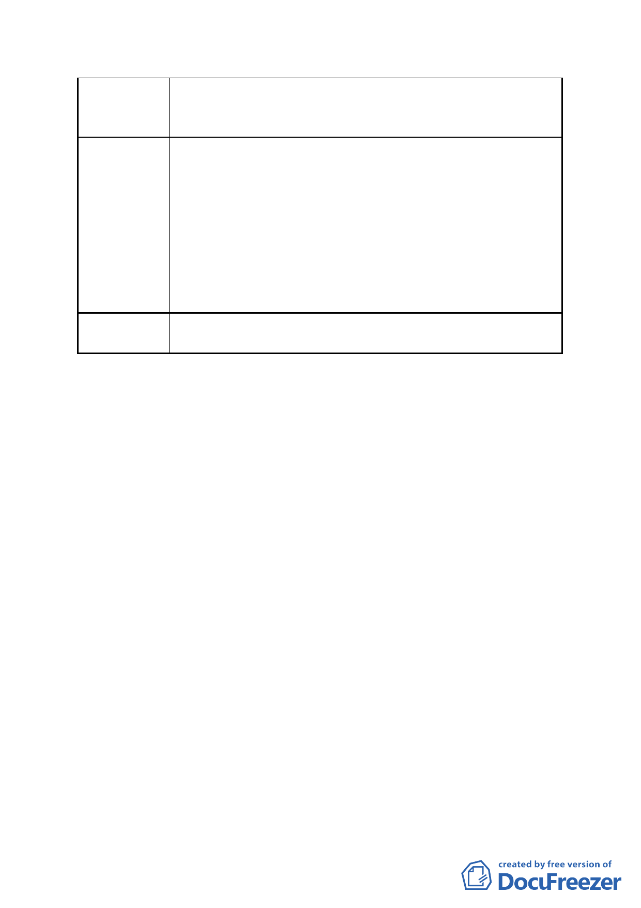

建議辦法
市府回應
可於明美公園地下規劃公有停車空間，及儘速審議民生汐止線、環狀
南北線等大眾運輸交通計畫，或放寬地區使用，以利本區及內科整個
文化產業間之串連。
1.查本府 97 年 8 月 5 日公告之都市計畫案內已載明：「為鼓勵本地區
各建築基地使用能充分利用或提供大眾運輸工具，各基地於申請都
市設計審議時應擬具大眾運輸使用計畫及停車空間提供公共使用
計畫，併同審議後據以實施。」；另本案 BOT 政策公告內亦規定：「應
評估本基地開發衍生之交通衝擊，…並以內部化方式設置。」。故
本開發案應秉持外部成本內部化原則，由開發者擬具大眾運輸及轉
乘接駁等交通配套措施。
2.另有關公車路線規劃部分，將配合未來本地區整體發展情形，由本
府交通單位評估設置。
委員會決議 依市府回應說明辦理
參、研議事項
案名：為「本市八德路四段、東寧路、市民大道五段及八德路四
段 106 巷所圍街廓解除整體開發規定都市計畫變更案之法
源依據」1 案，提請大會研議。
說明：
一、查旨案範圍原為唐榮鐵工廠舊址，市府前依都市計畫法第 26
條規定辦理之「修訂台北市土地使用分區（保護區，農業區
除外）計畫（通盤檢討）案」中，建議將其由工業區變更為
住宅區，經威京公司向本會陳情變更以多目標多元化原則開
發，復經本會決議同意變更為商業區（第三種商業區），並限
作公眾服務空間、國際購物中心、國際觀光旅館、辦公大樓、
文化休閒設施、停車場等 6 大項使用，另為避免土地開發後
畸零破碎而決議由威京公司整體開發。全案業於 80 年 2 月
13 日府工二字第 80003366 號「『修訂臺北市土地使用分區（保
護區，農業區除外）計畫（通盤檢討）案』內有關八德路 4 段、
東寧路、縱貫鐵路、八德路 4 段 106 巷所圍地區（原唐榮鐵
- 13 -